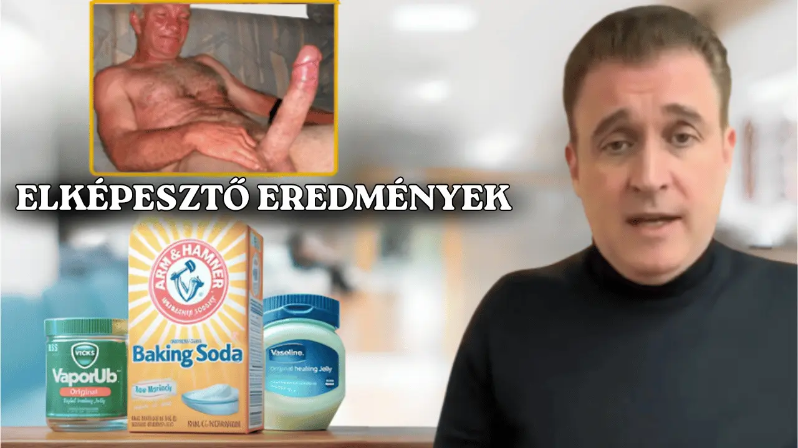
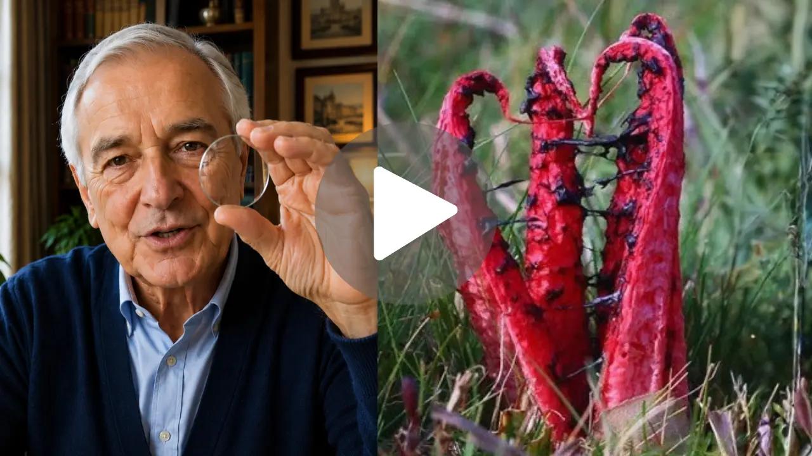

Először nehéz elolvasni a feliratokat. Aztán a közlekedési táblák homályosak lesznek. Majd abbahagyja az éjszakai vezetést. És egy nap — észrevétlenül — valaki másnak kell kísérnie Önt, bárhová is megy.
A látásvesztés nem hirtelen következik be. Lassan, csendesen halad előre — míg egy reggel felébred és rájön, hogy már nem ismeri fel unokái arcát távolról, nem tudja elolvasni az orvosi receptet, mások döntenek helyette arról, hogy mit tehet és mit nem. És a legtragikusabb dolog? Ez nem elkerülhetetlen.
Dr. Bush szemész, évtizedes klinikai tapasztalattal, olyan kérdéseket kezdett feltenni, amelyeket kollégái soha nem tettek fel. Miért veszítik el egyesek gyorsan a látásukat, míg mások idős korukig tökéletes látással rendelkeznek? Mi a különbség a szemeikben?
Amit felfedezett, az megrázta az orvosi közösséget. Az Oxfordi Egyetem kutatói, több mint 12 000 beteget elemezve, megerősítették intuícióját: a látás minősége közvetlenül összefügg a szem apró ereinek állapotával. Amikor ezek az erek eltömődnek, a szem sejtjei nem kapnak elegendő oxigént és tápanyagot — és csendesen, napról napra pusztulni kezdenek.
A folyamat néma és fokozatos. Nem fáj. Nem ad nyilvánvaló jeleket, amíg a károsodás már előrehaladott. És minden egyes nap, amit cselekvés nélkül tölt, növeli az elpusztult sejtek számát — közeledve ahhoz a ponthoz, amelyen túl már nem lehet semmit tenni.

Ugyanebben a kutatásban Dr. Bush valami rendkívülit azonosított: egy egyszerű trükköt egy természetes piros gyökérrel, amely közvetlenül a szem apró ereire hat — feloldja az elzáródásokat, eltávolítja a felhalmozódott mérgező lerakódásokat, és lehetővé teszi, hogy a sejtek ismét oxigént és tápanyagot kapjanak.
A dokumentált eredmények meglepték magukat a kutatókat is: olyan betegek, akik már nem tudtak szemüveg nélkül olvasni, akiknek nehézségeik voltak a vezetéssel, akik elveszítették a képességet, hogy meglássák szeretteik arcát — már az első hetekben javulást tapasztaltak.
Dr. Bush úgy döntött, hogy nyilvánosságra hozza ezt a felfedezést egy ingyenes videóban, amely mindent részletesen elmagyaráz: honnan származik ez a gyökér, pontosan hogyan hat a szem ereire, és — ami a legfontosabb — hogyan kell helyesen alkalmazni a betegeknél dokumentált eredmények eléréséhez.
Ez a videó minden, amire szüksége van. Nincs szükség időpontra, receptre vagy drága eljárásokra. Csak teljes körű információ — érthetően és hozzáférhetően elmagyarázva — hogy még ma cselekedni tudjon, mielőtt a károsodás visszafordíthatatlanná válik.